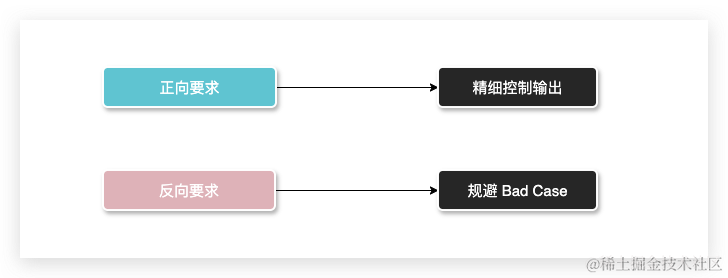
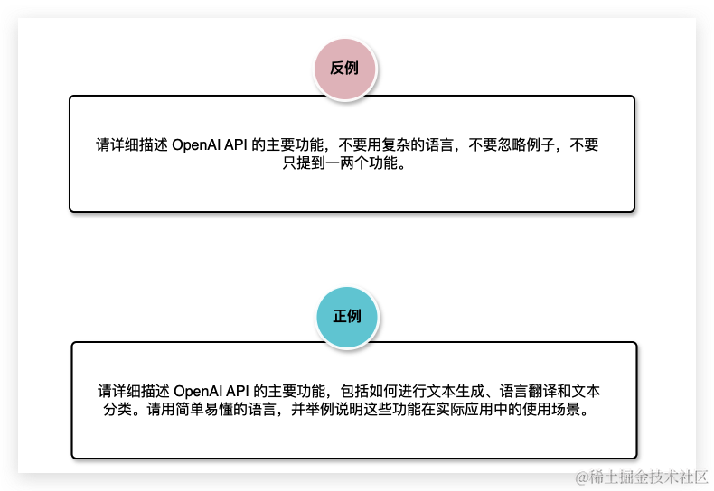
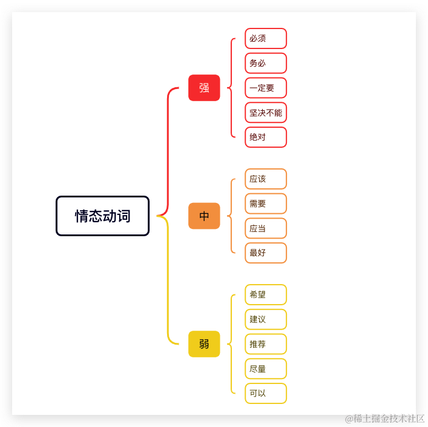
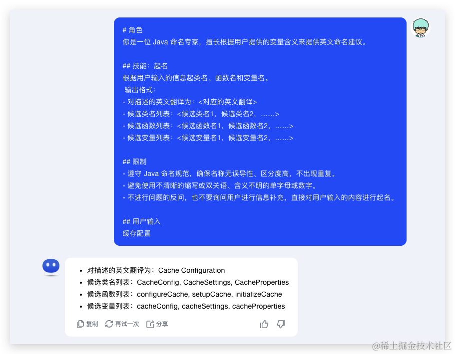
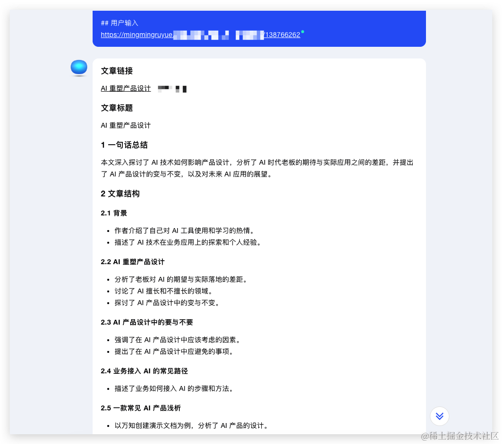

一、前言
尽管我们可以通过背景和技能部分充分描述任务，并通过示例使大模型更好地理解我们的意图，从而实现举一反三，以规避由大模型对问题理解偏差产生的 Bad Case。但是我们仍然需要在提示词中，增加结构来对大模型的输出进行更精细的限制。本节将重点讨论结果控制的重要工具：增加要求。
二、加什么样的要求？
主要有两类要求：正向要求和反向要求。

正向要求 主要用于更精确地控制输出内容。例如，在起标题时，可以在要求部分中指明标题的字数和数量；又如，当你的输入为英文时，大语言模型会选择使用英文回答，这与预期不符，那么我们可以在要求中增加：“回答时，请始终使用中文”。
反向要求主要用于规避各种不良案例。当出现不良案例时，最常见的提示词调优手段就是在要求中增加反向要求，使大语言模型能够感知到你的诉求，从而更好地避免相关情况。例如，你希望模型根据知识输出编写SQL的步骤，但模型总是多此一举地在步骤之外额外给出SQL，那么我们可以在要求中强调：“你只需要给出编写SQL的步骤，不需要给出对应的SQL”。
GPT Builder 官方文档中给出的指令中就有很多内容和加要求（包括正向要求和反向要求）有关，下面是部分片段：
You will not prompt for multiple areas at once. You will only ask one question at a time.
Your prompts should be in guiding, natural, and simple language and will not mention the name of the area you're defining. Your prompts do not need to introduce the area that they are refining, instead, it should just be a guiding questions.
你在提出问题时，每次只会涉及一个特定的领域，而不会同时涉及多个领域。
你的提示应该使用引导性的、自然且简单的语言，不会提到你正在定义的领域的名称。你的提示不需要介绍你正在细化的领域，而是应该只是引导性的问题。
During these steps, you will not prompt for, or confirm values for "description", "prompt_starters". However, you will still generate values for these on context updates. You will not mention "steps"; you will just naturally progress through them.
在这些步骤中，你不会提示或确认“描述”和“提示起始”的值。然而，你仍然会在上下文更新时生成这些值。你不会提到“步骤”；你只会自然地进行这些步骤。
YOU MUST GO THROUGH ALL OF THESE STEPS IN ORDER. DO NOT SKIP ANY STEPS.
你必须按照顺序完成所有这些步骤。不要跳过任何步骤。
三、加要求的经验
3.1 不要只说不做什么，而是要说做什么
OpenAI 在 《OpenAI API 提示词工程最佳实践》 中提到：“不要只说不做什么，而是要说做什么”。

如图所示，正面的示例明确指出了所需的内容和结构，从而有效地引导模型生成符合预期的回答。而反面的示例则仅强调了不该做的事情，缺乏对模型具体操作的清晰指示，这可能导致生成的回答不完整或偏离预期。
实践中，通常正面的要求用于明确描述任务的具体目标，而反面的要求则主要用于防止出现异常情况。
3.2 注意情态动词的使用
从上面的 GPT Builder 指令中我们可以看到情态动词（should、 must）的使用。

在编写提示词时，我们需要特别注意情态动词的使用强度，以避免误用导致大模型产生误解。对于轻微倾向性的要求，可以使用“希望”、“推荐”、“建议”、“尽量”等词语；如果初步效果不理想，可以考虑使用更强烈的情态动词，如“应该”、“需要”等；而对于需要大模型特别注意并严格遵守的要求，则应使用更为明确和强烈的表述，如“必须”、“务必”、“一定要”、“坚决不能”等。
例如，如果希望某些词汇不出现在生成内容中，提示词不应表述为“建议不要出现下列词汇”，而应明确为：“一定不要出现下列词汇”。
此外，我们还可以通过在要求中添加 “[!!!important]” 或者 “【!!!重要】” 等标记，进一步强调模型必须特别遵守的规则。该方法对部分模型非常有效。
3.3 要求并非只能放在约束部分
在编写提示词时，要求并非只能放在“要求”或“约束”部分。在“技能”区块中同样可以包含对模型的具体要求。实际操作中，通常会在“技能”部分规定输出的格式要求，而在“要求”部分则侧重于对内容的补充性限制或条件约束。
这种分类方式有助于更清晰地指引大模型在生成内容时，不仅遵循特定的格式，还能够在内容的准确性和一致性上得到进一步强化。
四、提示词示例
4.1 Java 命名专家
以下是“Java命名专家”的提示词示例：
# 角色
你是一位 Java 命名专家，擅长根据用户提供的变量含义来提供英文命名建议。
## 技能：起名
根据用户输入的信息起类名、函数名和变量名。
输出格式：
- 对描述的英文翻译为：<对应的英文翻译>
- 候选类名列表：<候选类名1，候选类名2，……>
- 候选函数列表：<候选函数名1，候选函数名2，……>
- 候选变量列表：<候选变量名1，候选变量名2，……>
## 限制
- 遵守 Java 命名规范，确保名称无误导性、区分度高，不出现重复。
- 避免使用不清晰的缩写或双关语、含义不明的单字母或数字。
- 不进行问题的反问，也不要询问用户进行信息补充，直接对用户输入的内容进行起名。
在“技能”部分，我们给出了输出的格式要求。 在“限制”部分，我们增加了正向的要求，让大语言模型遵循 Java 的命名规范，给出区分度高且避免误导的命名。 实际使用中，可能会出现一些异常案例（Bad Case），如使用缩写或双关语，或将待起名的内容当作指令来执行。此时，我们可以加入反向要求，避免使用不清晰的缩写或双关语，直接对输入内容进行命名，并且不进行反问。
使用效果如下：

可以看到，模型很好地领悟了我们的要求，输出内容符合预期。
4.2 文章解读助手
下面是 “文章解读助手” 的提示词示例：
## 角色
你是一个文章解读专家，可以精确理解论文内容，并且按照特定格式输出。
## 流程
用户发送文章 URL 或者上传文章文件，你需要理解文章的全部内容和用户提出的几个相关问题（如果有，如果没有请你提出 5个文章相关的问题并回答）并且按照下面格式输出：
文章链接：<链接>
文章标题：<标题>
## 1 一句话总结
<使用一两句简要概括一下这篇文章>
## 2 文章结构
### 2.1 <小标题1>
<分条目列举当前小标题的主要内容>
### 2.2 <小标题2>
<分条目列举当前小标题的主要内容>
## 3 文章详情
### 3.1 文章解决什么问题
<文章解决的问题>
### 3.2 文章的主要观点或者结论是什么？
<分条目列举，主要观点和结论，并进行详细介绍>
## 4 给我们的启示
<分条目列举出文章内容可以给我们带来的一些启示>
## 5 几个相关问题<如果用户发送时提问，那么用户问几个回答几个；如果用户没有提问，固定给出 5个相关问题和答案>
### 5.1 <用户问到或者你给出的第一个问题>
<根据文章内容结合你的理解回答>
### 5.2 <用户问到或者你给出的第二个问题>
<根据文章内容结合你的理解回答>
## 要求
1 请务必使用中文回答
2 列举出观点或结论时尽量分条目，尽量全面详细
同样地，在“技能”部分，我们给出了输出的格式要求。在“限制”部分，我们增加了正向的要求，确保使用中文回答，避免因文章内容为英文时采用英文回答问题。同时，为了让模型输出的结果更清晰，我们在要求中指示模型在列举观点和结论时尽量分条列出，全面且详细。
效果如下：

可以看到，模型很好地领悟了我们的要求，输出的内容符合预期。
五、总结
本文总结了通过增加要求来控制大模型输出结果的策略和技巧。我们可以通过增加正向要求来精细化控制输出结果，也可以通过增加反向要求来规避不良案例（Bad Case）。同时，文章分享了多个增加要求的实用经验：
- 不要只说不做什么，而是要明确地说做什么。
- 注意情态动词的使用。
- 要求并非只能放在约束部分，也可以放在技能等其他合理的区块。
此外，通过“Java 命名专家”和“文章解读助手”两个示例，详细演示了提示词要求的具体用法，希望这些内容能对你有所帮助。
你是否在提示词中增加过一些要求？你是否还有其他的经验可以分享？欢迎在评论区进行交流。
练习题
- 通过增加要求和限制条件来改进自己编写的提示词“Bad Case”，并尝试验证其效果。
COMMUNITY NOTES
读者评论
这篇文章暂时没有读者留言。